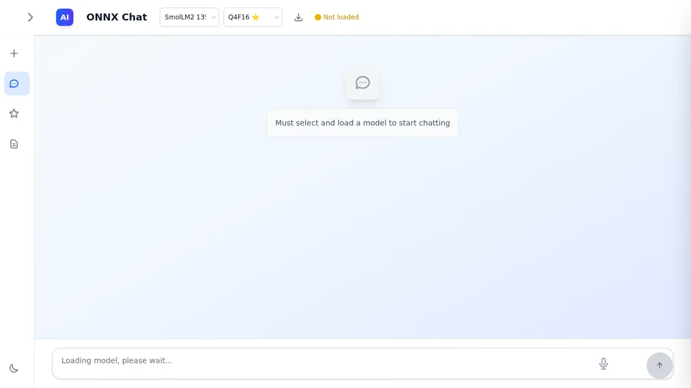

Flip through the work.
Each card opens into a short description and project links. Hover with a mouse, or use the flip button with touch, keyboard, or assistive technology.

Amortyx

OpenZenith

ArtCraft WebOS

Station Awareness

TaskWizer

TaskWizer Studio

Scratch Optimizer

Bolt

ONNX Chat

PRISAI

SiliconRank

OpenCodifier
Select a card to flip it. Press Escape to return to the front.
This page is a static, cloneable gallery. The screenshots live in examples/assets/screenshots/; no external image service, profile API, analytics, or credentials are required.